O que fazer em Luanda
23 lugares para visitar em Luanda: monumentos, museus, praças, praias e paisagens.
Na página de cada lugar: horário, preço em Kwanza (quando conhecido), como chegar, as fontes e a data de verificação. Horários e preços mudam: confirme antes de ir.
Cultura e monumentos
-
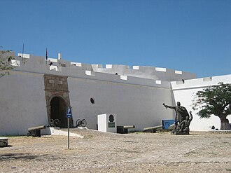
Fortaleza de São Miguel
Fortaleza de 1576 com vista sobre a baía de Luanda.
Foto: Erik Cleves Kristensen · CC BY 2.0
-
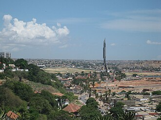
Memorial Dr. António Agostinho Neto
Monumento ao primeiro Presidente, conhecido como "Foguetão".
Foto: Erik Cleves Kristensen · CC BY 2.0
-
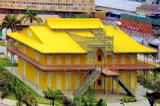
Palácio de Ferro
Edifício de ferro histórico, atribuído a Gustave Eiffel.
Foto: Zorglub · CC BY-SA 3.0
-
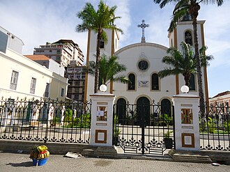
Sé Catedral de Luanda
A catedral de Luanda, Igreja de Nossa Senhora dos Remédios.
Foto: Fabio Vanin · CC BY-SA 3.0
-
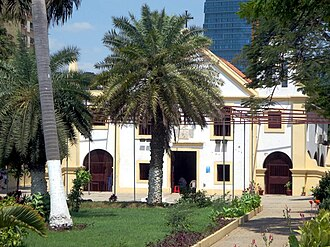
Igreja de Nossa Senhora da Nazaré
Igreja de 1664 com azulejos azuis, em frente à Marginal.
Foto: David Stanley from Nanaimo, Canada · CC BY 2.0
-
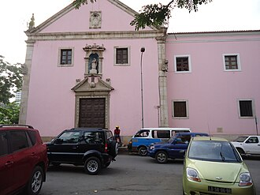
Igreja de Nossa Senhora do Carmo
Barroco do século XVII: azulejos, talha dourada e tetos pintados.
Foto: Fabio Vanin · CC BY-SA 3.0
-
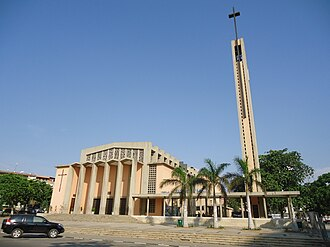
Igreja da Sagrada Família
Igreja modernista de 1964, património nacional desde 2023.
Foto: Fabio Vanin · CC BY-SA 3.0
-
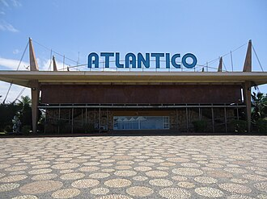
Cine Atlântico
Sala de espetáculos com uma cobertura que foi recordista mundial.
Foto: Fabio Vanin · CC BY-SA 3.0
-
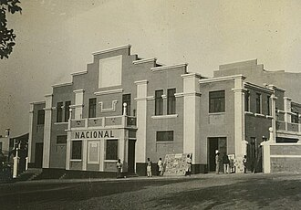
Cine-Teatro Nacional
A primeira sala de cinema e teatro de Luanda (1932), reaberta em 2026.
Foto: Gonçalo Figueiredo de Barros · CC BY-SA 4.0
-
Casa das Artes
Espaço cultural de Talatona com anfiteatro e galeria de arte.


.jpg){kind=link}


Museus
-
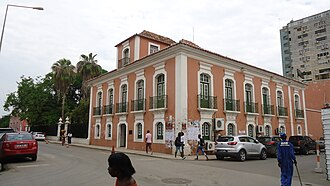
Museu Nacional de Antropologia
Coleção sobre as culturas dos povos de Angola.
Foto: Fabio Vanin · CC BY-SA 3.0
-
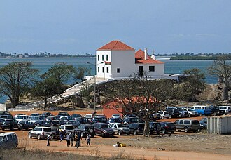
Museu Nacional da Escravatura
Museu junto ao mar sobre a história do tráfico de escravos.
Foto: João Sousa · CC BY-SA 3.0
-
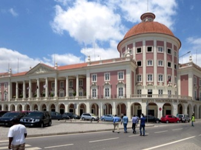
Museu da Moeda
A história do dinheiro em Angola, com entrada gratuita.
Foto: David Stanley · CC BY 2.0
-
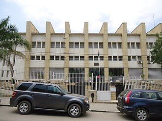
Museu Nacional de História Natural
A fauna de Angola num edifício de 1956 no Kinaxixi.
Foto: Fabio Vanin · CC BY-SA 3.0
-
Memorial às Vítimas dos Conflitos Políticos
Memorial às vítimas dos conflitos de 1975 a 2002, inaugurado em outubro de 2026.

.jpg){kind=link}


Natureza
-
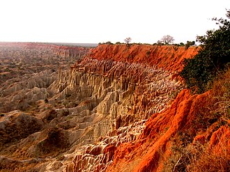
Miradouro da Lua
Falésias coloridas a 40 km de Luanda, mais bonitas ao pôr do sol.
Foto: Paulo César Santos · CC0
-
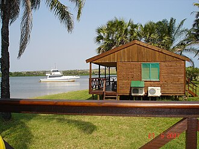
Barra do Cuanza
Foz do rio Cuanza, com praias e pesca desportiva, a 75 km de Luanda.
Foto: Luís Rochinha · CC BY 3.0
.jpg){kind=link}

Praias
-
Lookal Beach Club
Piscina e espreguiçadeiras à beira-mar; música à noite.
-
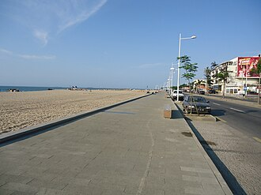
Ilha de Luanda
7 km de praia em frente à cidade, com restaurantes e vida noturna.
Foto: Fabio Vanin · CC BY-SA 3.0
-
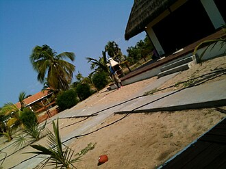
Ilha do Mussulo
Praias calmas a uma travessia de barco de Luanda.
Foto: Juvenalia Brito · CC BY-SA 3.0


Praças e passeios
-
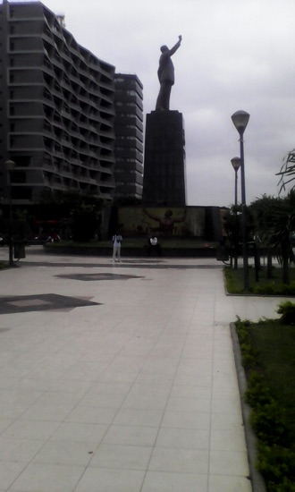
Largo da Independência
Onde foi proclamada a independência, em 1975.
Foto: Abreu Guilherme · CC BY 3.0
-
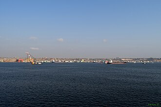
Marginal da Baía de Luanda
Passeio à beira da baía, ideal ao fim da tarde.
Foto: ---=XEON=--- · CC BY 3.0
-
Miradouro do Miramar
Vista panorâmica sobre a baía de Luanda, sobretudo ao pôr do sol.


Mais guias
- Agenda de eventos
- Câmbio do dia
- Restaurantes, bares e discotecas em Luanda
- Centros comerciais em Luanda
- Desporto e ginásios em Luanda
- O que fazer em Benguela e no Lobito
- O que fazer no Lubango e na Huíla
- O que fazer no Huambo
- O que fazer em Cabinda
- O que fazer no Namibe (Moçâmedes)
- O que fazer em Malanje
- Praias de Angola
- Parques nacionais de Angola
- Natureza e paisagens de Angola
- Museus de Angola
- Hotéis e alojamento em Angola
- Transportes em Angola: aeroportos, comboios e autocarros
- Casas de câmbio em Angola
Things to do in Luanda
23 places to visit in Luanda: landmarks, museums, squares, beaches and landscapes. Each place page has opening hours, prices in Kwanza and directions. The Tuende app is available in Portuguese, English, French and Spanish.